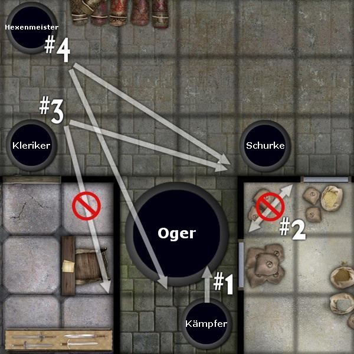

Pathfinder Rollenspiel Referenz-Dokument
| Tabelle: Größenmodifikatoren | |
| Größe | Größenmodifikator |
| kolossal | -8 |
| gigantisch | -4 |
| riesig | -2 |
| groß | -1 |
| mittelgroß | +0 |
| klein | +1 |
| sehr klein | +2 |
| winzig | +4 |
| Mini | +8 |
| Diagramm: Gelegenheitsangriffe In diesem Kampf steht ein Kämpfer und ein Hexenmeister einem Oger und dessen Kumpanen, einem Goblin gegenüber. #1: Der Kämpfer kann sich auf diesem Weg gefahrlos nähern, ohne einen Gelegenheitsangriff zu riskieren, da er durch kein Feld läuft, das von dem Oger (der 3m Reichweite hat) oder dem Goblin bedroht wird. #2: Wenn der Kämpfer sich auf diesem Weg nähert, provoziert er damit zwei Gelegenheitsangriffe, da er sich durch ein von beiden bedrohtes Feld hindurch bewegt. #3: Der Hexenmeister bewegt sich mit einer Rückzugsaktion von den Gegnern weg. Daher gilt das erste Feld das er verlässt, als nicht bedroht, er kann sich also gefahrlos von dem Goblin wegbewegen. Wenn er aber das zweite Feld verlässt, provoziert er damit einen Gelegenheitsangriff durch den Oger (der 3m Reichweite hat). Er könnte seine Bewegung daher auf einen 1,5m-Schritt beschränken, was eine Freie Aktion darstellt und keinen Gelegenheitsangriff provoziert. |
| Tabelle: Aktionen im Kampf | |
| Standard-Aktion | Gelegenheitsangriff1 |
| Aktiven Zauber mittels Konzentration aufrecht erhalten | Nein |
| Aktivierung eines magischen Gegenstandes (außer Tränke und Öle) | Nein |
| Angriff (Fernkampf) | Ja |
| Angriff (Nahkampf) | Nein |
| Angriff (Waffenlos) | Ja |
| Außergewöhnliche Fähigkeit einsetzen | Nein |
| Energie fokussieren | Nein |
| Fackel mit einem Zündholz entzünden | Ja |
| Fertigkeit einsetzen, die eine Aktion erfordert | Meistens |
| Finte | Nein |
| Jemand anderem helfen | Vielleicht2 |
| Schriftrolle lesen | Ja |
| Sich vorbereiten (um eine Standard-Aktion auszulösen) | Nein |
| Sterbenden Freund stabilisieren (siehe die Fertigkeit Heilkunde) | Ja |
| Trank zu sich nehmen oder ein Öl benutzten | Ja |
| Übernatürliche Fähigkeit einsetzen | Nein |
| Umklammerung entkommen | Nein |
| Verborgene Waffe ziehen (siehe Fingerfertigkeit) | Nein |
| Volle Verteidigung | Nein |
| Zauber beenden | Nein |
| Zauber wirken (Zeitaufwand: 1 Standard-Aktion) | Ja |
| Zauberähnliche Fähigkeit einsetzten | Ja |
| Zauberresistenz senken | Nein |
| Bewegungsaktion | Gelegenheitsangriff1 |
| Aktiven Zauber lenken | Nein |
| Auf ein Pferd steigen oder absteigen | Nein |
| Aufstehen | Ja |
| Bewegung | Ja |
| Gegenstand aufheben | Ja |
| Hand- oder Leichte Armbrust laden | Ja |
| Schild bereit machen oder lösen3 | Nein |
| Schweres Objekt bewegen | Ja |
| Tür öffnen oder schließen | Nein |
| Verängstigtes Reittier kontrollieren | Ja |
| Verstauten Gegenstand herausholen | Ja |
| Waffe verstauen | Ja |
| Waffe ziehen3 | Nein |
| Volle Aktion | Gelegenheitsangriff1 |
| Berührungszauber auf bis zu 6 Verbündete anwenden | Ja |
| Coup de Grace | Ja |
| Fackel entzünden | Ja |
| Fertigkeit mit der Dauer 1 Runde anwenden | Meistens |
| Flammen ersticken | Nein |
| Rennen | Ja |
| Rückzug4 | Nein |
| Schwere oder Repetierarmbrust laden | Ja |
| Sich aus einem Netz befreien | Ja |
| Sturmangriff4 | Nein |
| Voller Angriff | Nein |
| Waffe in einem beriemten Panzerhandschuh befestigen/lösen | Ja |
| Wurf einer Waffe mit Flächenwirkung vorbereiten | Ja |
| Freie Aktion | Gelegenheitsangriff1 |
| Aufhören, sich auf einen Zauber zu konzentrieren | Nein |
| Gegenstand fallen lassen | Nein |
| Sich zu Boden fallen lassen | Nein |
| Sprechen | Nein |
| Zauberkomponenten vorbereiten, um einen Zauber zu wirken5 | Nein |
| Schnelle Aktion | Gelegenheitsangriff1 |
| Beschleunigten Zauber wirken | Nein |
| Augenblickliche Aktion | Gelegenheitsangriff1 |
| Zauber Federfall wirken | Nein |
| Keine Aktion | Gelegenheitsangriff1 |
| Abwarten | Nein |
| 1,5m-Schritt | Nein |
| Unterschiedliche Aktionsarten | Gelegenheitsangriff1 |
| Kampfmanöver ausführen6 | Ja |
| Talent einsetzten7 | verschieden |
| 1
Ungeachtet der Aktion provozierst du einen Gelegenheitsangriff, wenn du
dich von einem bedrohten Feld entfernst. Diese Spalte deutet an, ob die
Aktion selbst, nicht die damit möglicherweise verbundene Bewegung,
einen Gelegenheitsangriff provoziert. 2 Wenn du jemanden bei einer Aktion hilfst, die normalerweise einen Gelegenheitsangriff provozieren würde, dann provoziert auch die unterstützende Handlung selbst einen Gelegenheitsangriff. 3 Ist dein Grund-Angriffsbonus +1 oder höher, kannst du jeweils eine dieser Aktionen mit einer regulären Bewegung kombinieren. Hast du das Talent Kampf mit zwei Waffen, kannst du zwei Einhand- oder leichte Waffen in derselben Zeit ziehen, die du normalerweise bräuchtest, um eine Waffe zu ziehen. 4 Kann als Standard-Aktion eingesetzt werden, wenn du auf eine einzelne Handlung in der Runde beschränkt bist. 5 Solange die Komponente nicht ein extrem großer oder unhandlicher Gegenstand ist. 6 Manche Kampfmanöver ersetzen einen Nahkampfangriff, nicht eine Aktion. Als Nahkampfangriff können sie während eines Angriffs oder Sturmangriffs einmal, einmal oder mehrmals innerhalb eines Vollen Angriffs, oder sogar als Gelegenheitsangriff eingesetzt werden. 7 Die Beschreibung eines Talents legt seine Wirkung fest. | |
| Tabelle: Taktische Bewegungsrate | ||
| Volk | Keine oder leichte Rüstung | Mittelschwere oder schwere Rüstung |
| Mensch, Elf, Halbelf, Halb-Ork | 9m (6 Felder) | 6m (4 Felder) |
| Zwerg | 6m (4 Felder) | 6m (4 Felder) |
| Halbling, Gnom | 6m (4 Felder) | 4,5m (3 Felder) |
| Diagramm: Taktische Bewegung Die erste Bewegung des Kämpfers kostet ihn 1,5m (oder 1 Feld) seiner Bewegungsrate. Auch sein nächster Schritt kostet ihn 1,5m, sein dritter aber (der zweite Diagonalschritt) kostet ihn 3m. Als nächstes bewegt er sich in schwieriges Gelände, was ihn wiederum 3m kostet. An dieser Stelle (6#) hat sich der Kämpfer 9m weit bewegt, also eine Bewegungsaktion ausgeführt. Um auf das letzte Feld zu kommen, ist eine Diagonalbewegung in schwierigem Gelände nötig, was ihn 4,5m kostet. Um sich soweit zu bewegen, muss er seine Standard-Aktion für diese Runde einsetzen. Die Bewegung des großen Ogers kostet ihn ihn insgesamt 6m (oder 4 Felder) seiner Bewegung. Der Oger kann sich nicht diagonal um die Ecke bewegen, um sein Ziel zu erreichen, sondern muss sich wie im Bild angedeutet vollständig darum herum bewegen. |
| Tabelle: Große und Maßstab von Kreaturen | ||
| Größe der Kreatur | Angriffsfläche | Natürliche Reichweite* |
| Mini | 15cm | 0 |
| Winzig | 30cm | 0 |
| Sehr klein | 75cm | 0 |
| Klein | 1,5m | 1,5m |
| Mittelgroß | 1,5m | 1,5m |
| Groß (hoch) | 3m | 3m |
| Groß (lang) | 3m | 1,5m |
| Riesig (hoch) | 4,5m | 4,5m |
| Riesig (lang) | 4,5m | 3m |
| Gigantisch (hoch) | 6m | 6m |
| Gigantisch (lang) | 6m | 4,5m |
| Kolossal (hoch) | 9m | 9m |
| Kolossal (lang) | 9m | 6m |
| *Diese Werte sind typisch für Kreaturen der angezeigten Größe; es gibt aber auch Ausnahmen. | ||
| Tabelle: Modifikatoren auf den Angriffswurf | ||
| Der Angreifer.... | Nahkampf | Fernkampf |
| ist geblendet | -1 | -1 |
| ist verstrickt | -21 | -21 |
| nimmt den Verteidiger in die Zange | +2 | - |
| ist unsichtbar | +22 | +22 |
| steht höher | +1 | +0 |
| liegt | -4 | -3 |
| ist erschüttert oder verängstigt | -2 | -2 |
| zwängt sich durch einen Bereich | -4 | -4 |
| 1
Ein verstrickter Charakter erleidet außerdem noch einen Malus von -4
auf seine Geschicklichkeit, was seinen Angriffswurf ebenfalls verändern
kann. 2 Der Verteidiger verliert seinen Geschicklichkeitsbonus auf die RK. 3 Die meisten Fernkampfwaffen können nicht eingesetzt werden, wenn der Angreifer liegt. Man kann allerdings eine Armbrust oder Shuriken in liegender Position ohne Mali einsetzten. | ||
| Tabelle: Modifikatoren auf die Rüstungsklasse | ||
| Der Verteidiger... | Nahkampf | Fernkampf |
| hat Deckung | +4 | +4 |
| ist blind | -21 | -21 |
| ist getarnt oder unsichtbar | siehe Tarnung | |
| ist kauernd | -21 | -21 |
| ist verstrickt | +02 | +02 |
| wird auf dem falschen Fuß erwischt | +01 | +01 |
| befindet sich im Ringkampf (der Angreifer jedoch nicht) | +01 | +01 |
| ist hilflos | -43 | +03 |
| kniet oder sitzt | -2 | +2 |
| ist in einem Haltegriff | -43 | +03 |
| liegt | -4 | +4 |
| zwängt sich durch einen Bereich | -4 | -4 |
| ist betäubt | -21 | -21 |
| 1 Der Verteidiger verliert seinen Geschicklichkeitsbonus auf die RK. 2 Ein verstrickter Charakter erhält einen Malus von -4 auf seine Geschicklichkeit. 3 Der Verteidiger wird auf dem falschen Fuß erwischt und darf daher seinen Geschicklichkeitsbonus nicht auf seine Rüstungsklasse addieren. | ||
 |
| Diagramm: Deckung #1: Der Kämpfer steht direkt neben dem Oger (Ogre), nichts hindert ihn daran, diesen zu erreichen. Der Oger hat gegen den Kämpfer keine Deckung. #2: Der Schurke steht direkt neben dem Oger, aber eine oder mehrere Linien von den Ecken des von seinen besetzten Feldes zu den Ecken der vom Oger besetzten Felder laufen durch eine Wand. Der Oger hat daher seinen Nahkampfangriffen gegenüber Deckung, da er aber Reichweite hat (und seine Angriffe in Bezug auf Deckung daher als Fernkampfangriffe gewertet werden), hat er keine Deckung ihm gegenüber. #3: Der Kleriker mit einer Fernkampfwaffe an, und muss eine der Ecken des von ihm besetzten Feldes aussuchen, um damit die Deckung zu bestimmen. Einige dieser Linien verlaufen durch ein festes Hindernis, was bedeutet, das der Oger Deckung hat. #4: Der Hexenmeister greift ebenfalls auf Entfernung an, seine Linien zeigen aber, das er deutlich mehr als die Hälfte des Ogers sehen kann, daher hat der Oger ihm gegenüber nur teilweise Deckung. |
| Diagramm: In die Zange nehmen #1: Der Kämpfer und der Kleriker nehmen den Oger in die Zange. Sie können eine Linie zwischen ihren Feldern ziehen, die durch zwei einander gegenüberliegende Seiten der vom Oger eingenommenen Fläche verläuft. Sowohl der Kämpfer als auch der Kleriker erhalten einen Bonus von +2 auf ihre Angriffswürfe gegen den oger. #2: Der Schurke nimmt den Oger nicht in die Zange, da er weder zu dem Kleriker noch zu dem Krieger eine Linie ziehen kann, die durch zwei einander gegenüberliegende Seiten der vom Oger eingenommenen Fläche verläuft. Der Schurke kann außerdem auch keine Linie zu dem Hexenmeister ziehen, da dieser nicht direkt vor dem Oger steht und diesen daher nicht bedroht. #3: Der Goblin und der Oger nehmen den Hexenmeister in die Zange, da sie eine Linie zwischen sich ziehen können, die durch zwei einander gegenüberliegende Seiten der vom Hexenmeister eingenommenen Fläche verläuft. Hätte der Oger allerdings keine Reichweite, würden er und der Goblin den Hexenmeister nicht in die Zange nehmen. |
| Tabelle: Mali für den Kampf mit zwei Waffen | ||
| Umstände | Haupthand | Zweithand |
| Normale Mali | -6 | -10 |
| Leichte Waffe in Zweithand | -4 | -8 |
| Talent Kampf mit zwei Waffen | -4 | -2 |
| Leichte Waffe in Zweithand und Talent Kampf mit zwei Waffen | -2 | -2 |